開始到1936年2月為止的7年間，教主服務於立川飛機製造公司，是一位優秀的航空工程師。除了身為技術人員的工作，還持續研究伊藤家家傳的病筮鈔「易經」，雖只是業餘，不過，當在工作上和同事間發生種種難題，或有煩惱的人，都能幫助解決問題，因此在公私兩方面都受到相當的信賴。
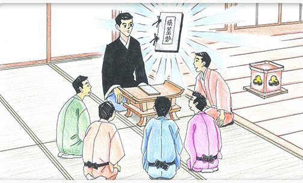
學習並體會真如雙親在寒修行，面對各種問題考驗時內心轉換與覺悟的感受。
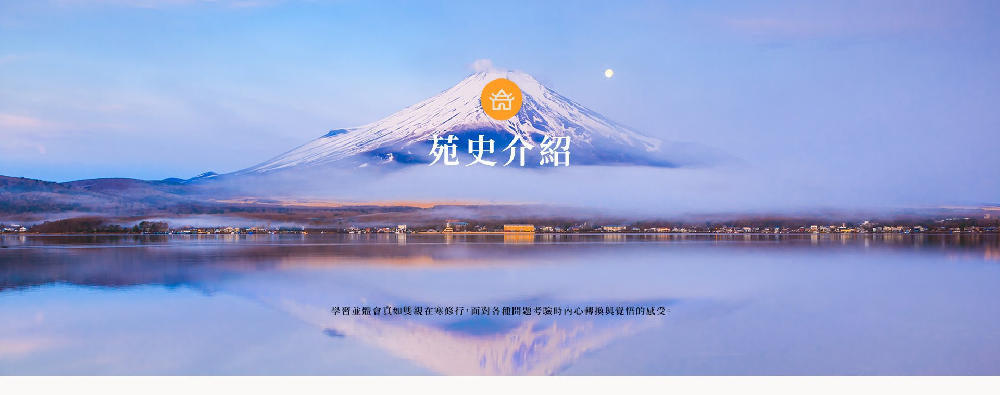
三十天寒修行，以12個日子為主，圖文敘述雙親在寒修行期間的歷程。
開始到1936年2月為止的7年間，教主服務於立川飛機製造公司，是一位優秀的航空工程師。除了身為技術人員的工作，還持續研究伊藤家家傳的病筮鈔「易經」，雖只是業餘，不過，當在工作上和同事間發生種種難題，或有煩惱的人，都能幫助解決問題，因此在公私兩方面都受到相當的信賴。

攝受心院的內田家與教主的伊藤家有親戚關係，算是遠房表兄妹，但彼此卻從沒見過面。二十五歲時，教主的母親問教主有關結婚之事，教主回答：「自己沒有看女性的眼光，一切就交給母親做主，我有一個條件，就是要吃過苦的女性。」雙親於四月二十七日結婚，一家四口過著幸福快樂的生活。
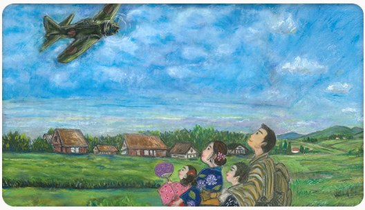
迎請不動明王之日。雙親因不可思議的緣份迎請神威顯赫的不動明王。請佛師雕刻同樣佛尊，但三個月後無法履行，佛師請教主把自己的傳家之寶，運慶以一刀三禮雕刻的不動明王帶走。十二月二十八號在迎請回程的立川路上，天空出現了五色彩雲，牽引著車子移動前進。後來十二月稱為「出發的月份」。每年這天舉行的法會名為「總結法前供」。
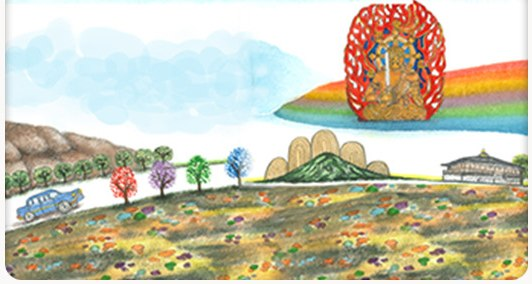
在大寒與小寒之間開始三十天修行，算是遠房表兄妹，正月八日開始感受到教主的病筮鈔神威法力的人陸續加入修行。每天清晨五點和晚上八點有兩次修行，誦讀千卷經《般若心經》，以一千次除以前來的人數，就是誦讀的次數。在唱誦經文的同時，必須用力揮動錫杖，錫杖上方的銅環是鍍金，當揮動時，摩擦掉下來的金粉就四處飄散，有時甚至連銅環都飛了出去。
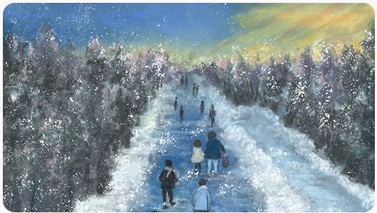
達一個月的期間，教主首次覺得：「辭去工作，為眾人諮商解惑，成為他們心靈的依靠，體會到至今未曾體得的難能可貴與喜悅」，母親也曾說過：「教主有服侍神佛的命運」，因此，決定要終身為佛效勞，湧現想要專心修道的想法。教主深深思考自己應走的人生道路，這天剛好是迎請大日大聖不動明王滿一個月的日子。
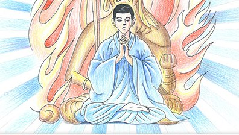
教主對攝受心院說：「實在無法身兼兩職，乾脆辭去工作吧！」攝受心院回答說：「你說想辭去工作是很容易的事情，但是我和孩子們該怎麼辦呢？靠什麼生活呢？」教主想：「如果讓妻兒生活不安穩又怎麼能夠救助他人呢？」教主向攝受心院傳達自己想要專心修道的想法，但遭反對。
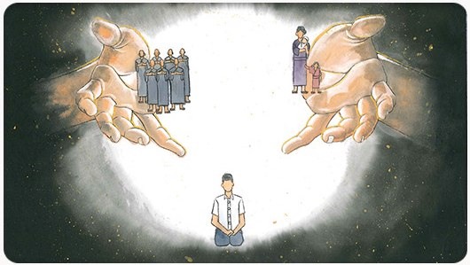
攝受心院說：「請你辭去工作專心修行吧！」教主回答說：「要我失去做了七年的工作會比和疼愛的孩子分開還要痛苦」，結果，攝受心院說：「我透視到你穿著黑色改良法衣，坐在經桌前幫助人們解決問題」。原本反對的攝受心院，因透視到教主應行之道而轉念，提出要專心修道。
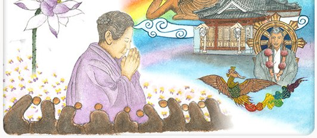
教主在上班時，接到攝受心院電話通知：「長女發高燒，請趕快回來！」攝受心院問教主說：「失去孩子和辭職，哪一個比較痛苦呢？」透過長女身體反覆不適，請示佛意，決心遵從佛意後，長女恢復正常。真是不可思議的現象。
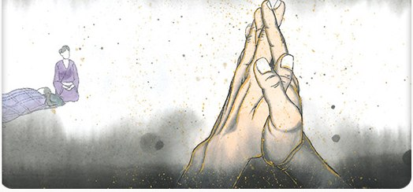
教主向上司報告辭職的事，上司建議先暫時請假，這樣的結果正符合教主的願望。於是立即提出一星期的請假單。
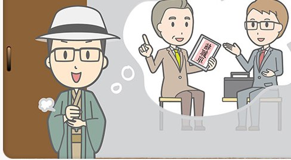
請浦野法海師父，前來立照閣修首次護摩的日子。這個日子在節氣中為立春，教苑舉行「節分會」，撒福豆時誦唸「鬼在外、福在內」。
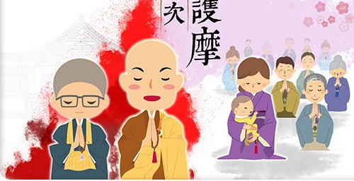
二月三號攝受心院的姑姑油井玉惠前來，雙親在護摩壇前讀經，攝受心院雙手高高舉起，頭上結蓮花密印，與處於感應狀態的姑姑對座，二月四日凌晨一點攝受心院相承第三代靈能，啟示根本靈言「由顯入密，正確修行。為世為人，正確貫徹修道」。這天也是天靈系靈能與地靈系靈能合為一體的日子。現今法會名為「真如靈妙讚仰法會」。
雙親為今後要拜誰為師請示佛意。此時攝受心院的態度一直沒有任何啟示顯現。眼見攝受心院的樣子，教主從各方面去思惟，專心祈念。結果攝受心院開口：「你說已辭去公司的工作，但事實上，只是請假休息，所以佛尊也讓我休息」。教主聽到這番話的一剎那，猶如被冷水從頭淋到腳一般，全身僵硬，可說是體驗到不動明王的威神力似，懺悔並立即到公司，真正提出辭呈。回家後，攝受心院恢復正常。二月八日為立教日，現今法會名為「真如立教慶典」。
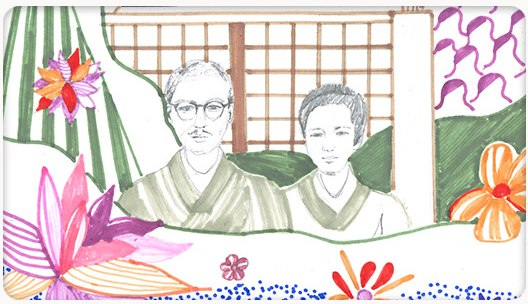